#1145: [ND] Remove total, positive, and negative antibody tests from 12/15/20 onward
Issue number 1145
hmhoffman opened this issue on April 7, 2021, 4:59 PM PDT
State: ND
Dates affected: 12/15/20-03/07/21
Describe the issue: On December 15, 2020, North Dakota stopped updating Total antibody tests (specimens), Positive antibody tests (specimens), and Negative antibody tests (specimens), and later removed the metrics from their data dashboard entirely. To ensure that our dataset represents values that are as up to date for the day in our timeseries as possible, we are clearing their Total antibody tests (specimens), Positive antibody tests (specimens), and Negative antibody tests (specimens) from December 15, 2020 to March 7, 2021.
Comments
#1145: [ND] Remove total, positive, and negative antibody tests from 12/15/20 onward
Issue number 1145
hmhoffman opened this issue on April 7, 2021, 4:59 PM PDT
State: ND
Dates affected: 12/15/20-03/07/21
Describe the issue: On December 15, 2020, North Dakota stopped updating Total antibody tests (specimens), Positive antibody tests (specimens), and Negative antibody tests (specimens), and later removed the metrics from their data dashboard entirely. To ensure that our dataset represents values that are as up to date for the day in our timeseries as possible, we are clearing their Total antibody tests (specimens), Positive antibody tests (specimens), and Negative antibody tests (specimens) from December 15, 2020 to March 7, 2021.
Comments
#1090: [ND] Capture Confirmed + Probable Deaths
Issue number 1090
muamichali opened this issue on February 8, 2021, 8:15 AM PST
Labels Data quality
In discussion . Closing for now.
Comments
#1090: [ND] Capture Confirmed + Probable Deaths
Issue number 1090
muamichali opened this issue on February 8, 2021, 8:15 AM PST
Labels Data quality
In discussion . Closing for now.
Comments
#1043: [ND]Backfill antigen and PCR tests
Issue number 1043
muamichali opened this issue on January 4, 2021, 5:43 PM PST
Labels Data quality
State or US: North Dakota
Describe the problem On December 30, 2020, North Dakota began reporting antigen in addition to PCR testing. From December 31, 2020 to January 3, 2021, we captured those numbers combined in our Total Tests (PCR) and Total Test Encounters (PCR) fields. On January 4, 2021, we began reporting these figures separately and revised our historical data to reflect the separate antigen and PCR numbers North Dakota provides.
Link to data source
Comments
#1009: [ND] Patching Now hospitalized for 12/08 and 12/10
Issue number 1009
jaclyde opened this issue on December 11, 2020, 7:21 PM PST
Labels Data quality
State: North Dakota
Issue: On December 8 2020 North Dakota froze their dashboard to add antigen tests and probable cases. Then on 12/10 and 12/11 the hospitalization metrics have not been reported on the dashboard. We are using the "COVID-19 Daily Report" posted on the official North Dakota Department of Health twitter account to patch the Current/Now hospitalized metric for 12/8 and 12/10 (and took 12/11 data from the same), as well as deaths for 12/8.
Source: https://twitter.com/NDDOH


Comments
BEFORE: 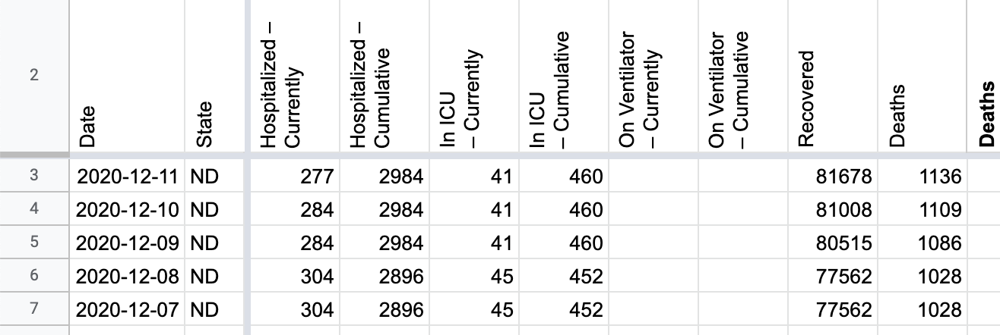
AFTER: 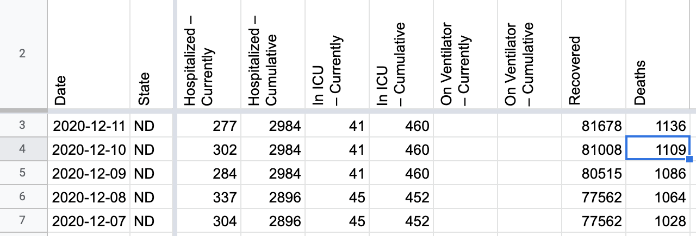
#1004: [ND] Backfill confirmed and probable cases with new data published by the state
Issue number 1004
space-buzzer opened this issue on December 10, 2020, 1:24 PM PST
Labels Data quality
Target Date: from beginning of October till now Overview: ND published the time series of their confirmed and probable cases (adding probables, which were not reported previously). We should backfill to attribute the addition of probable cases to the correct dates.
Comments
#1001: [ND] Clear out the confirmed & probable deaths time series (leaving the total deaths number)
Issue number 1001
muamichali opened this issue on December 10, 2020, 9:01 AM PST
Labels Data quality
State or US: North Dakota
Describe the problem
- The definitions on North Dakota's website do not explicitly classify deaths as confirmed or probable. We were previously capturing positive deaths as confirmed, but since it is now clear that they include antigen and PCR positives, and since ND does not call these confirmed deaths, we do not think we should label them as confirmed deaths.
- We are going to also clear the previously captured probable deaths time series, since the category that North Dakota calls Deaths of Individuals Presumed Positive doesn't necessarily match probable cases.
Link to data source https://www.health.nd.gov/diseases-conditions/coronavirus/north-dakota-coronavirus-cases
Comments
#996: [ND] Backfill 12/3 Currently hospitalized and Currently in ICU
Issue number 996
hmhoffman opened this issue on December 4, 2020, 10:29 AM PST
State: ND
Dates affected: 12/3
Describe the issue: On December 3, 2020, North Dakota stopped reporting patients Hospitalized with COVID on their COVID-19 dashboard to “eliminate the discrepancy” between patients Hospitalized with COVID and patients Hospitalized due to COVID. To allow our data quality team time to investigate this matter, we carried over North Dakota's Currently hospitalized and Currently in ICU on December 3, 2020, and patched them on December 4, 2020. As of December 3, 2020, North Dakota’s Currently hospitalized will include only patients hospitalized due to COVID.
Comments
BEFORE: 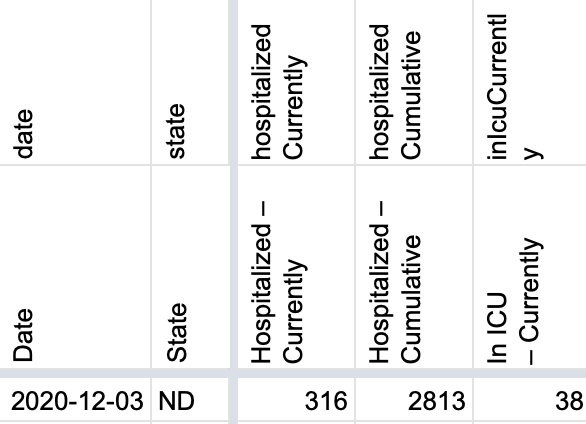
AFTER: 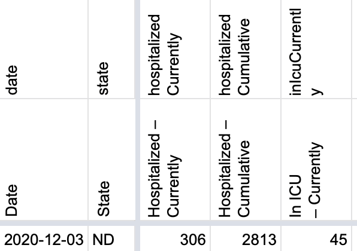
#988: [ND] Backfill Deaths (Confirmed and Probable), Deaths (Confirmed) to reflect all deaths rather than deaths due to COVID
Issue number 988
muamichali opened this issue on December 1, 2020, 11:19 AM PST
Labels Data quality
State or US: North Dakota
Describe the problem Over the past week, a gap has opened between the number of COVID-19 deaths North Dakota's health department reports and The COVID Tracking Project’s counts of deaths in the state. On November 30, North Dakota’s health department dashboard reported 927 cumulative COVID-19 deaths, but The COVID Tracking Project recorded 680. This is because we track deaths due to COVID, instead of deaths among cases in the state.
It’s clear that a reporting backlog is to blame for most of the widening discrepancy between figures: The share of COVID-19-positive individuals who died in North Dakota with death certificates still pending has doubled since the beginning of November. To better reflect the reality of rising deaths in North Dakota, we are changing our method for counting deaths in the state to the other main paradigm for tracking deaths: counting deaths among cases.
Link to data source https://covidtracking.com/data/state/north-dakota/screenshots
Comments
[ ND.xlsx ](url)
#717: [ND] PCL Cases Historicals
Issue number 717
the-daniel-lin opened this issue on July 31, 2020, 5:46 PM PDT
Labels Backfill Historical Data not stale
State or US: North Dakota
Describe the problem We consider "Positive Cases" on the ND dashboard to refer to lab-confirmed PCR only cases.
The dashboard annotation says, "Positive Cases: Number of unique individuals who test positive for COVID-19 from state and private labs" -- which is ambiguous as to the type of test.
However, ND has a separate serology reporting table, and this outreach (https://covid-tracking.slack.com/archives/C0124MP2E5C/p1590955808399900) seems to confirm PCR-only in "Positive Cases."
The "Positive Cases" values on the state website largely align with the values in the cumulative hover-over graph, barring any changes that ND makes to their own historical data. We should be able to back-fill using this hover-over line graph. Each day in States Daily should correspond with the previous day on the line graph.
Link to data source https://www.health.nd.gov/diseases-conditions/coronavirus/north-dakota-coronavirus-cases
Hover-over graph looks like this:

You should be able to view the data table and scroll down to look at the values without having to hover. Use Total Cases.
Comments
Updated Positive Cases (PCR) in addition to other PCR-testing related metrics:
PCR Testing encounters, PCR Tests (people), PCR Test (specimens)
nd_post_20200911[DataStore]Coronavirus numbers by state - [Raw]StatesDaily.csv.txt nd_pre_20200911[DataStore]Coronavirus numbers by state - [Raw]StatesDaily.csv.txt
#621: [ND] Site was down on 13-July, the day was skipped for today's publish
Issue number 621
space-buzzer opened this issue on July 13, 2020, 8:30 PM PDT
Labels Data quality
Site is back up and available:
Last updated: 7/13/2020
4442
Positive Cases
119436
Negative
123878
Total Unique Individuals Tested
3653
Recovered
43
Currently Hospitalized
277
Total Hospitalized
87
...
Comments
Before: 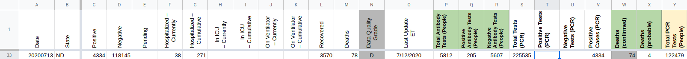
After: 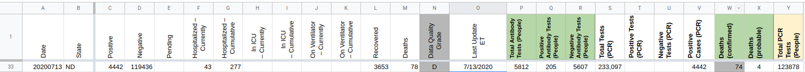
#583: Fixing ND PCL historicals from 7/3-7/7
Issue number 583
karaschechtman opened this issue on July 8, 2020, 10:33 AM PDT
Labels Data quality PCL/SVP Historicals
From 7/3-7/7, we used deaths among confirmed cases rather than deaths among confirmed cases with COVID-19 listed as a cause of death on the death record for ND confirmed deaths. This inflated both our confirmed deaths and our total deaths figures.
Comments
It turned out we also had the wrong probables number for 7/7. Before: 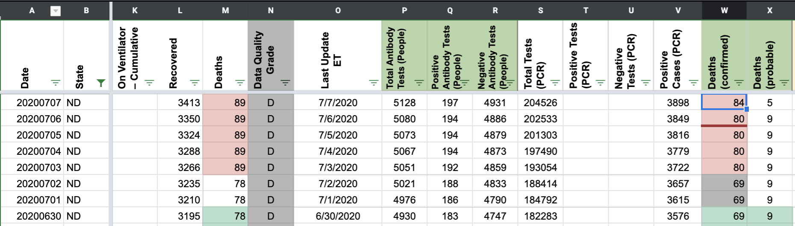 After: 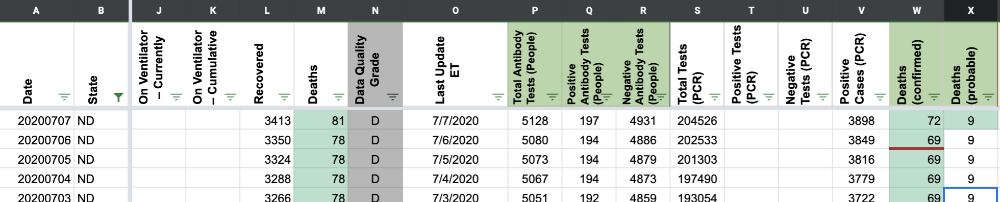
#522: [ND] PCL Historicals and WS2
Issue number 522
jesseandersonumd opened this issue on June 25, 2020, 6:19 AM PDT
Labels PCL/SVP Historicals
Deaths include several different data points, such as "deaths due to COVID-19", "deaths where COVID-19 is not the primary cause", and "pending death records". We should consider "deaths due to COVID-19" as confirmed, and add the remaining values - "pending death records", "deaths where COVID-19 is not the primary cause" and "deaths of individuals presumed positive" to obtain probables. In WS2, we're reporting the total - number of individuals who tested positive and died from any cause while infected with COVID-19 - as our confirmed value. We should only be reporting "deaths due to covid-19" as our confirmed.
Comments
5/12 CTP Started reporting deaths and confirmed cases of deaths as the same value 5/31 CTP Started separating confirmed and probable deaths
ND started separating confirmed and probable deaths on 5/3. All the values from 5/3 until 5/31 need to be filled in from screenshots.
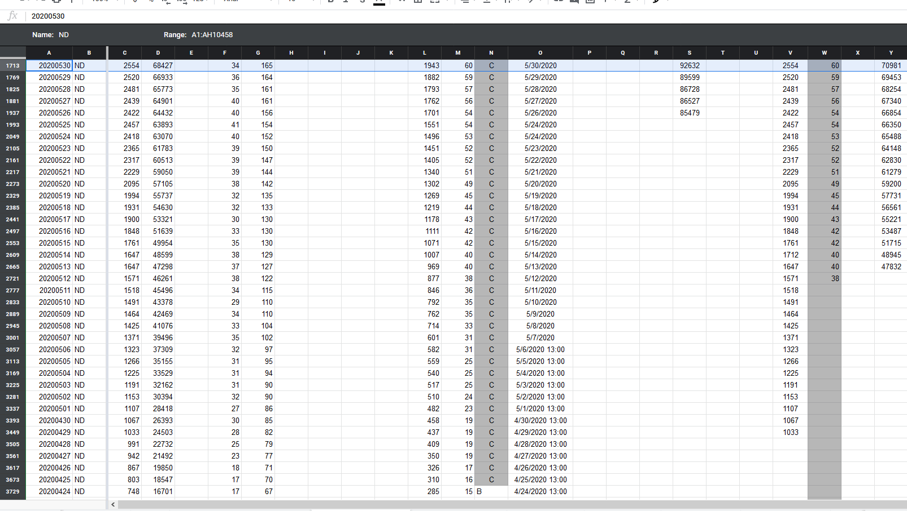
New decision for how to track COVID-19 deaths in ND Confirmed = due to COVID-19 Probable = presumed positive Lumped = due to COVID-19 + presumed positive
Edited tooltips and worksheet 2 values so that pattern will be followed during today's DE shift
Probable
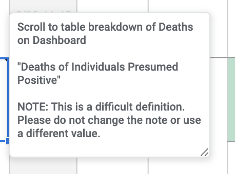
Confirmed
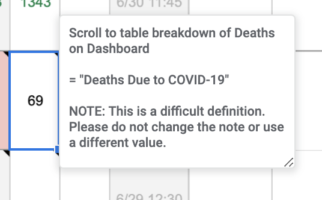
Lumped

From 5/3 to 5/26, ND provided 3 categories in its table: “Deaths due to COVID-19”, “not the primary cause”, and “pending death records”. It did not provide probables.
{kind=link}
{kind=link}
Changing "totals" to equal "Confirmed" to equal "Deaths Due to COVID-19", and zeroing out probables.
Before (with @muamichali's prior edits in line with our old ND definitions): 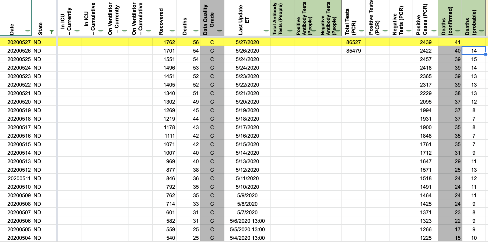 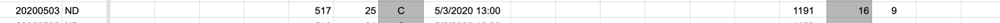
After 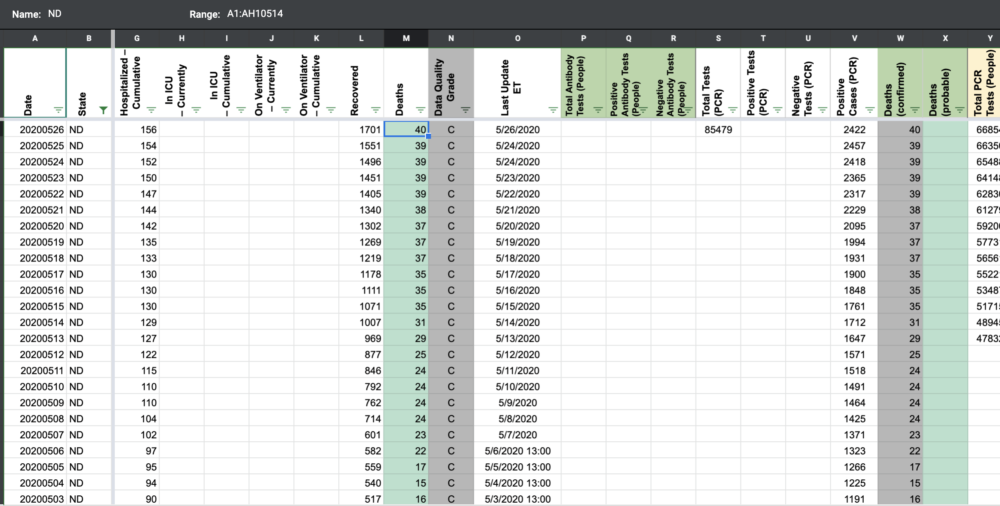
As a result of the revision for 5/3-5/27, it will appear as if deaths drop on 5/3 from 24 to 16, as we are excluding the pending + non-primary cause confirmed cases from our "Confirmed" and "Total" column. For 5/2 and prior, we have no way of excluding those numbers, because ND doesn't provide the breakdown.

Adding a public note to explain this: "On 5/3, ND began providing counts of deaths for lab-confirmed individuals with death records still pending, and lab-confirmed individuals who died but not due to COVID. As of 7/1, we have edited our figures to exclude these numbers from our death counts, resulting in an apparent drop from 24 deaths on 5/2 to 16 on 5/3."
From 5/27 onward, changing values from screenshots so that: Confirmed = due to COVID-19 Probable = presumed positive Lumped = due to COVID-19 + presumed positive
{kind=link}
Before 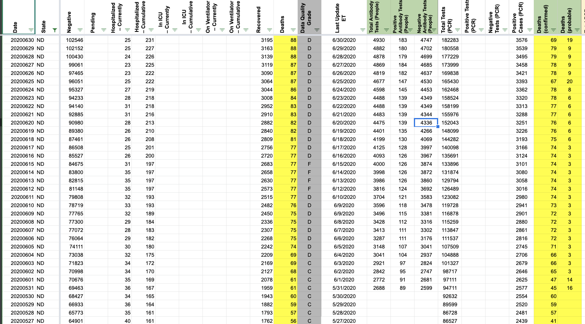 After: 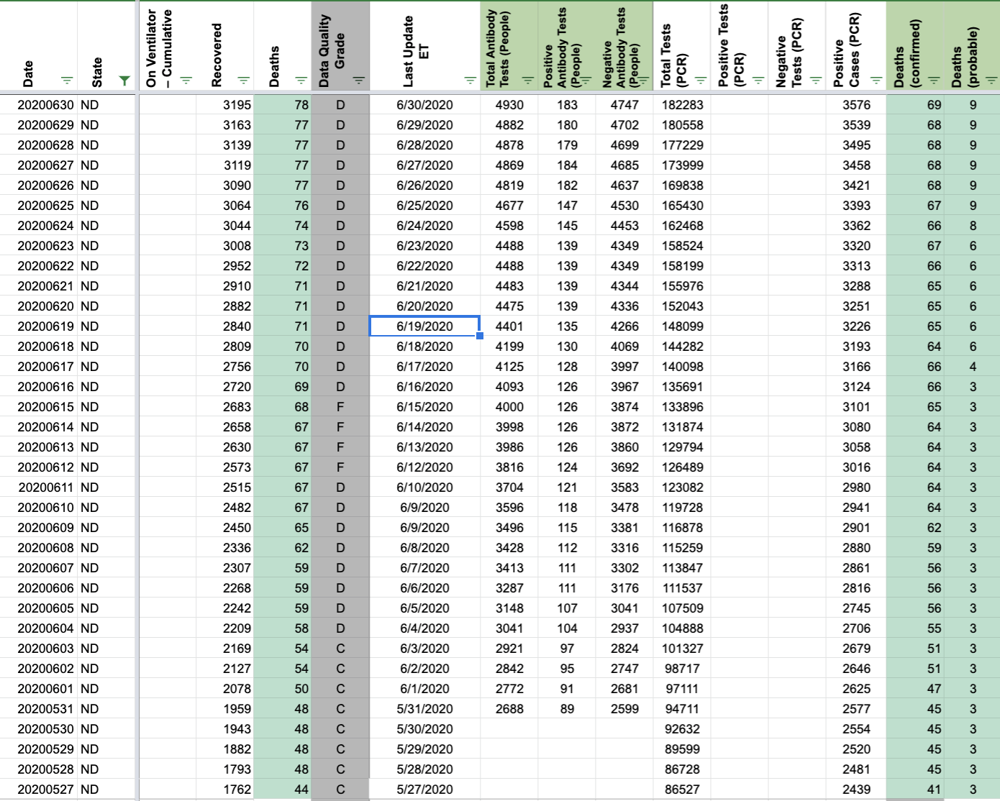
When we release confirmed/probable columns, we will need to make a public note: "On 6/18, ND revised down its confirmed death count from 66 to 64. On 6/24, ND revised its confirmed death count from 67 to 66 to remove an out-of-state case." (source re out-of-state case: https://www.health.nd.gov/news/positive-covid-19-test-results-79) 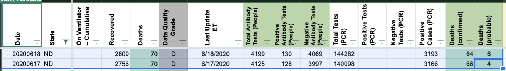 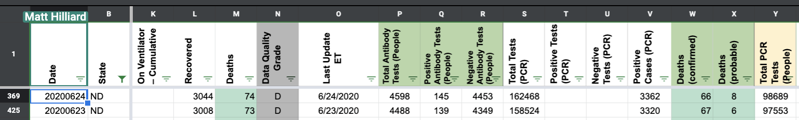
#3: ND data is completely offline
Issue number 3
lucasgonze opened this issue on March 11, 2020, 9:18 AM PDT
This is completely disconnected and badly needs help. It is a PowerBI dashboard that resists current scraping methods.
Comments
The PowerBI dashboard is behind an iframe. Tried a quick attempt in node.js
https://gist.github.com/thairu/fb291d6d74bf09f66cdf69ef6a0fa2ab will get you the data in a json array. It currently prints out
[
{ displayName: 'Hospitalized', value: '0' },
{ displayName: 'Positive Cases', value: '1' },
{ displayName: 'First Last Updated Date', value: '3/11/2020' },
{ displayName: 'Total Monitored to Date', value: '26' },
{ displayName: 'Total Tested', value: '27' },
{ displayName: 'Deaths', value: '0' },
{ displayName: 'Currently Monitoring', value: '7' },
{ displayName: 'Positives', value: '1' },
{ displayName: 'Negative', value: '12' },
{ displayName: 'Pending', value: '14' }
]
Do we have coverage in urlwatch on ND? If not, let me know and I'll figure it out.
@joshuaellinger My focus has shifted from code to product, so I am not the best person to own this.
The PowerBI dashboard is behind an iframe. Tried a quick attempt in node.js
https://gist.github.com/thairu/fb291d6d74bf09f66cdf69ef6a0fa2ab will get you the data in a json array. It currently prints out
[
{ displayName: 'Hospitalized', value: '0' },
{ displayName: 'Positive Cases', value: '1' },
{ displayName: 'First Last Updated Date', value: '3/11/2020' },
{ displayName: 'Total Monitored to Date', value: '26' },
{ displayName: 'Total Tested', value: '27' },
{ displayName: 'Deaths', value: '0' },
{ displayName: 'Currently Monitoring', value: '7' },
{ displayName: 'Positives', value: '1' },
{ displayName: 'Negative', value: '12' },
{ displayName: 'Pending', value: '14' }
]
Do we have coverage in urlwatch on ND? If not, let me know and I'll figure it out.
@joshuaellinger My focus has shifted from code to product, so I am not the best person to own this.
Multi-edit tool-PRODUCTION - ND-reb-20210105.csv.txt Multi-edit tool-PRODUCTION - ND-reb-20210105_post.csv.txt